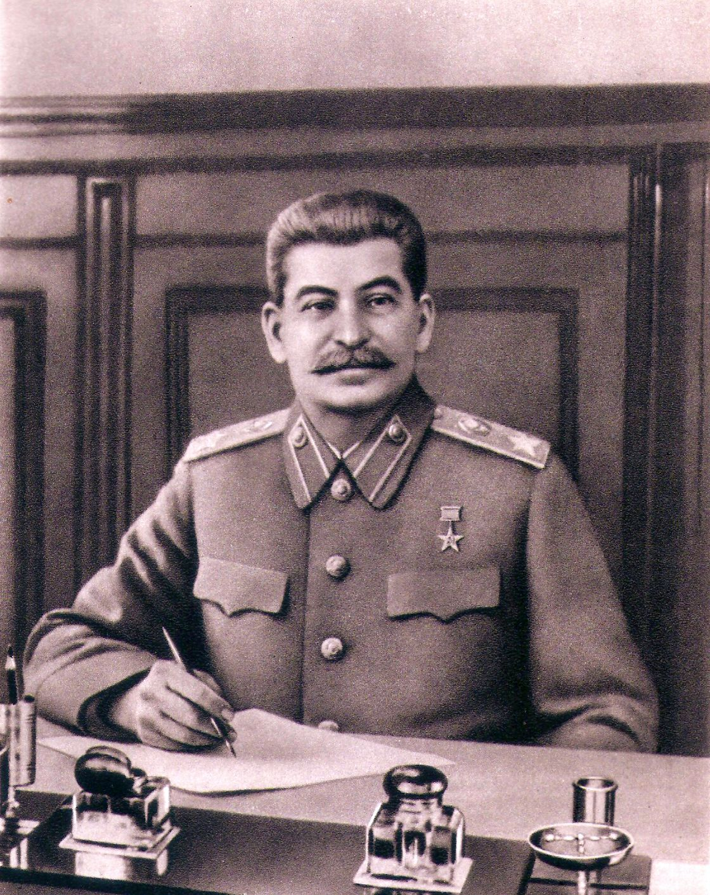

ソビエト社会主義共和国連邦
/n
ヨシフ・スターリン
生い立ち

1878年12月21日（ユリウス暦では12月9日）にイオセブ・ベサリオニス・ゼ・ジュガシヴィリとして、ロシア帝国下のグルジアのゴリに生まれた。父のヴィッサリオン・ジュガシヴィリはゴリに工房を構える靴職人、母のケテワン・ゲラーゼはレンガ職人の娘であり、共に農奴の家系の出身であった。スターリンは両親の第3子であったが、2人の兄は幼児期に死没していたため、実質的には長男として育てられた。
スターリンの生まれ故郷は騒々しく暴力的で、治安の悪い地域であった。父のヴィッサリオンは靴職人として成功しており、一時は工房で10人の従業員を雇うほどの経済的余裕があったが、伝統的なグルジア様式の靴への需要が減ったことで事業は行き詰まった。飲酒に逃避したヴィッサリオンはアルコール依存症を患い、しばしば妻や幼い息子に暴力を振るうようになった。1883年までにケテワンはスターリンを連れてヴィッサリオンの家を離れ、母子はその後10年間で9回も転居を繰り返す流浪の生活を始めた。1886年、2人は親交のあったクリストファー・シャルクビアーニ司祭の家に居候を始める。ケテワンは掃除婦や洗濯婦として働き生活費を稼ぐ一方で、息子に学校教育を受けさせることを強く望んでいた。
1888年9月、シャルクビアーニ司祭の取り計らいによりゴリの教会付属学校に入学することを許された。入学後のスターリンは他の子供たちと頻繁に喧嘩したが、学業の面では極めて優秀な成績を残した。一方で、幼少期のスターリンは病気や怪我に苦しめられ1884年には天然痘に罹患し、命は助かったものの顔面の皮膚に目立つ痘痕を残した。また12歳の時までに2度に亘って馬車にはねられて大けがを負い、後遺症で左腕の機能に障害を抱えることになった。母のケテワンはスターリンが学校に入ったことを大いに喜んだが、父のヴィッサリオンは息子に靴職人を継がせることを望んでおり、学業には反対していた。ヴィッサリオンはケテワンに「俺は靴職人だ。息子も靴職人になるさ」と溢しており、息子を無理やり連れ去って自分と一緒に働く道を選ばせようとしたり、養育費を打ち切るなどの抵抗を続けていたとされる。スターリンは度重なる父親の反対や障害を乗り越えつつ勉学に励んだ。
1894年8月、奨学金を得たスターリンは首都トビリシの神学校に入学した。トビリシ神学校は全寮制であり、司祭を目指す約600人の訓練生と共同で生活することになった。当初、スターリンは神学校でも非常に成績優秀だったが、やがて神学に対する興味を失い、成績も下降していった。また、学内で秘密裏に活動していた読書クラブに加わり、禁じられた書籍に触れるようになり、カール・マルクスの著作である『資本論』に影響され熱心なマルクス主義者となった。神学校の記録によれば、スターリンは自らを無神論者だと宣言しており、礼拝への参加や修道士への挨拶を拒否していた。また、1896年には禁止されていたヴィクトル・ユゴーの著書の所持で、1898年には朝の祈禱の欠席や規律違反、反抗的態度などで繰り返し注意や処罰を受けていた。1899年4月、スターリンはトビリシ神学校を去り、2度と戻ることはなかった。
概要
1878年12月21日、ロシア帝国統治下のグルジアのゴリで生まれた。正教の神学校で教育を受けるが、後に無神論に転向してマルクス主義の信奉者となり、1899年10月に神学校を去って革命家へと転身した。
その後、ウラジーミル・レーニンが率いるロシア社会民主労働党ボリシェヴィキ派に加わり、1912年に党中央委員に選出された。1917年の十月革命でボリシェヴィキが権力を掌握した後、レーニンのロシア共産党による独裁国家が成立すると、その行政府である人民委員会議の有力者となり、1922年4月に党書記長に就任し、同年12月のソビエト連邦の建国にも深く関与した。ソビエト連邦の指導者であったレーニンが1924年1月に死去すると、その後継をめぐって起きたレフ・トロツキーとの権力争いを制し、自身が務めていた党中央委員会書記長に権限を集中させることで最高指導者としての地位を確立した。党内ではトロツキー派の世界革命論（永久革命）を否定して、一国社会主義論による国内体制の維持を優先する路線を示した。この理論対立はトロツキー派の粛清の大義名分としても用いられた。
以降は人民委員会議議長および同職を改組した閣僚会議議長、軍事大臣、前述の党中央委員会書記長などの要職を兼任し、死去する1953年3月まで最高指導者の地位にあった。
1928年10月には戦時共産主義体制による経済疲弊から一時的に導入されていた新経済政策（ネップ）を切り上げさせ、第一次五ヶ年計画を実行に移した。同計画では政府主導の農業事業の集団化（コルホーズ）を進めて合理化と統制を進め、脆弱な工業力を強化すべく工業重点化政策を推進した。結果として帝政時代からの課題であった農業国から工業国への転身を果たし、ソ連が世界第2位の経済力を有する基盤を作り出したと評されている。
一方で急速な経済構造の改革は、反対派に対する厳しい弾圧と合わさって国民に多数の犠牲者を出すことになった。前者については農業政策の混乱によって深刻な食糧不足が発生し、1932年から1933年の飢饉へと繋がった。後者に関してはグラーグ（収容所）に収監された者だけで100万人以上、これを免れた数百万人もシベリアなどの僻地に追放処分を受けた。強権支配は大粛清と呼ばれる大規模な反対派摘発で頂点に達し、軍内の将官を含めて数十万人が処刑あるいは追放された。
1939年、ナチス・ドイツの台頭などによって国際情勢が不安定化する中、マクシム・リトヴィノフに一任していた仏英ソ同盟の締結が不調に終わったこともあり、反共主義・反スラブ主義を掲げていたアドルフ・ヒトラーのナチス・ドイツと独ソ不可侵条約を締結し、秘密議定書に基づくポーランド侵攻は第二次世界大戦を起こすことになる。世界を驚嘆させたこの協定は政治的イデオロギーを別とすれば、ソ連政府によって有利に働いた。ポーランド分割・バルト三国併合・東カレリア併合（冬戦争）などの軍事行動における背景になっただけでなく、外交交渉においてもそうであった。第一次世界大戦における再三の鞍替え行為の末、ロシア革命後の混乱に乗じてベッサラビアを領有していたルーマニアに対し、ドイツと共同で外交圧力を掛けてベッサラビアと北ブコビナを返還させている。アジア方面ではドイツと同じ枢軸国の日本とも日ソ中立条約を締結した。
1941年6月、第二次世界大戦においても中立を維持していたソ連は、イギリス本土上陸の失敗で手詰まりとなったドイツによる侵略を受け、独ソ戦が始まった。同時にイギリスを中心とする連合国陣営にも参加し、アメリカの連合国参戦後はレンドリースによる援助対象とされている。自身の大粛清による影響もあって大きな苦戦を強いられ、多数の犠牲者や反乱に苦しんだものの、従来通りの強権支配を維持して軍と政府の統制を維持し続けた。やがて戦争が長期化する中で態勢を建て直し、最後には反攻に転じてドイツの首都であるベルリンを陥落させ、東ヨーロッパを支配下に置いた。アジア方面ではソ連対日参戦でモンゴル人民共和国の独裁者ホルローギーン・チョイバルサンと共に満州・内モンゴルのほか、日本の北方領土や南樺太、38度線以北の朝鮮半島（現在の朝鮮民主主義人民共和国）まで攻め落とした。
連合国陣営内でソ連が果たした役割は非常に大きく、国際連合安全保障理事会常任理事国となり、アメリカ合衆国と並ぶ超大国として戦後秩序に影響を与えた。ヤルタ会談とポツダム会談では大戦後のヨーロッパ情勢についての協議を行って冷戦を始めて鉄のカーテンを築き、ファシズム打倒後の共産主義と資本主義の対立においては西ヨーロッパ諸国と北大西洋条約機構を結成したアメリカに対し、非同盟を掲げてスターリンと対立したヨシップ・ブロズ・チトー政権のユーゴスラビアを除く東ヨーロッパ諸国とワルシャワ条約機構が後に設立される。アジア情勢を巡っては国共内戦で中国共産党を支援して中国大陸に中華人民共和国を成立させ、1946年12月の第一次インドシナ戦争ではベトナム民主共和国、1950年6月の朝鮮戦争では朝鮮民主主義人民共和国を支援して竹のカーテンを築いて東側陣営を拡大していく。
1953年3月5日に死去するまで国家指導者としての立場は続き、ソ連国内の戦後復興でも主導的な役割にあったことはスターリン様式の建設物が今日でも多く残っていることからも理解できる。また科学技術や工業力の重点化政策も引き続き維持され、核武装・宇宙開発などに予算や費用が投じられており、前者は1949年8月のRDS-1で成功し、後者も後に実現している。最後に関わった国家指導は大規模な農業・環境政策たる自然改造計画であった。1953年3月にクンツェヴォ・ダーチャの寝室で倒れて病没した。
歴史上最悪の独裁者、「ヨシフ・スターリン」
第二次世界大戦中のユダヤ人大虐殺「ホロコースト」については多くの日本人が知っているだろう。実は、ホロコーストの始まる数年前の1932年、ウクライナの地はソ連によって蹂躙し尽くされていた。
400万から500万人、実にウクライナ人の4人に一人が餓死に追いやられたのだ。
その悲劇は「ホロドモール」と呼ばれている。
1920年代末から工業国への転換を目指したソ連政府は、豊かな穀倉地帯だったウクライナの農民に対して、
過酷な取り立てを行った。モスクワから多数の穀物調達員が派遣され、ウクライナ中の小麦をただ同然で収奪。
その代金で急激な工業化を達成する。だがその代償は大きく、33年にはウクライナ全土が酷い飢饉に見舞われることになった。
麦袋からこぼれ落ちた粒を口にした者は、農地を囲んだソ連軍によって銃殺され、ついには人肉食が横行した始末である。
この大殺戮を命じた者の名は、ヨシフ・ヴィッサリオノヴィチ・ジュガシヴィリ。またの名をスターリン（「鋼鉄の人」）という。
レーニンの後継をめぐって起きたレフ・トロツキーとの権力争いを制すると、自身が務めていた党中央委員会書記長に権限を集中させることで最高指導者としての地位を確立。
その後トロツキーを殺したことに始まり、ブハーリン、ルイコフなど幹部をかたっぱしから粛清していく。そしてそれは幹部だけにとどまらず反対派の者や、無関係な者まで対象にされた。
最盛期であった1937年から1938年までに、134万4923人が即決裁判で有罪に処され、半数強の68万1692人が死刑判決を受け、63万4820人が強制収容所や刑務所へ送られた。赤軍も5人の元帥の内3人、
国防担当の人民委員代理11人全員、最高軍事会議のメンバー80人の内75人、軍管区司令官全員、陸軍司令官15人の内13人、軍団司令官85人の内57人、師団司令官195人の内110人、准将クラスの将校の半数、
全将校の四分の一ないし二分の一が「粛清」され、大佐クラス以上の将校に対する「粛清」は十中八九が銃殺という。深夜に響く銃声は「スターリンノック」と呼ばれ、人々に銃殺を覚悟させた。
また、「赤軍の至宝」とまでいわれたトハチェフスキー元帥なども粛清してしまったため、独ソ戦の前半はドイツに大敗を喫している。
秘密警察のヤゴーダなどがドイツのスパイとして暗躍していたが、そのヤゴーダも逮捕され処刑。後任のエジョフも後に逮捕され処刑。更に後任のベリヤも処刑されている。
それに加えてヤゴーダの家族も全員が逮捕され、処刑された。ヤゴーダ派のNKVD隊員も粛清の対象となり、約3000人がこの時期に死亡したと言われる。
人民をかたっぱしからシベリア流刑、強制収容所送りにした彼に殺された者が何人いたのかはもはや調べがつかず、2000万人ほどだとも言われている。